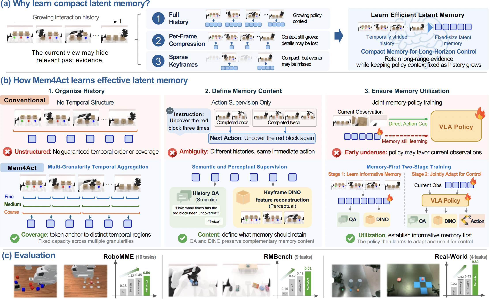

Abstract
Long-horizon manipulation hinges on memory. A block's color seen early in a task may be hidden by the time the robot needs it, yet most vision-language-action (VLA) models act from the current observation alone. Existing memory methods store raw history, compressed visual tokens, or language summaries, but they either burden the policy with an ever-growing context or discard the temporal, semantic, and perceptual details that matter later.
We introduce Mem4Act, which continuously distills past observations into a compact, fixed-size latent memory trained explicitly for control. Multi-granularity temporal attention structures this memory across time scales; semantic question answering and key-frame DINO feature reconstruction teach it to retain both task facts and fine visual detail; and memory-first two-stage training ensures the policy actually draws on memory instead of reacting only to what it currently sees.
Across 29 tasks spanning RoboMME, RMBench, and four real-world setups, Mem4Act sets a new state of the art for memory-dependent control, with success rates of 49.88%, 61.0%, and 81.50%, respectively, while keeping the policy's memory input a fixed size no matter how long the history grows.

Mem4Act Framework
Effective latent memory must answer three questions: where to attend, what to retain, and how to make the policy use it. Mem4Act tackles each one directly:
- Coverage (where to attend): multi-granularity temporal attention spreads a limited memory budget across time, merging local events into long-range context rather than repeatedly encoding similar moments.
- Content (what to retain): semantic question answering trains memory to keep task-relevant facts, and key-frame DINO feature reconstruction preserves fine visual detail from specific moments, signals that action supervision alone cannot provide.
- Utilization (how the policy uses it): memory-first training builds an informative memory with auxiliary supervision before jointly tuning memory and policy for control, so the policy learns to rely on history rather than the current frame alone.